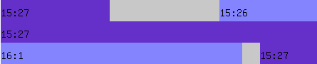

{kind=link}
{kind=link}
bible.ort.org
website, and then assembling a Torah reading from the associated GIFs. It also optionally examined
those GIF images to figure out which sections were dark-blue and which were light-blue, and thereby
estimate which sections to hide by shading at the beginning and end of a reading.
Following the demise of bible.ort.org in 2022, in order to bring ScrollScraper back online, its software had to
be modified to operate very differently. All of the ORT GIF images are now on the ScrollScraper website,
and it makes sense to treat this set of Torah images as a unified whole rather than just examining
a small set of images for each ScrollScraper user. Given the amount of effort to effectively address
the above-mentioned shading problem in this new environment, it made sense to create a dataset and
data structures which could address not only the shading problem, but also to take advantage of this
global knowledge to create the most-requested ScrollScraper feature: TrueType fonts on the right side
of the page.
The bible.ort.org images are great and must have taken a tremendous amount of work to
create, but unfortunately each vertical line is only 30 pixels high and each line is 445 pixels wide.
So they're quite granular when you zoom-in or print at high resolution.
We've computed a global map for the entire Torah, which knows the start-and-end coordinates of each Torah verse, and also knows about white space between verses, and even within a verse.
Given that information and the lengths of those segments, and which segments belong to which verse, it's not difficult to interpolate how to partition the (TrueType) Hebrew text of each verse among those segments. Then if you place each Hebrew fragment in the same position as its corresponding GIF fragment, you've solved the ScrollScraper TrueType problem. Now the output is as clear as the hardcopy Tikkun sitting on your bookshelf.
For example, consider one image's worth of data (there are 6938 such images comprising the complete Torah), from Exodus:
% grep t2/1601C101 final_outputs/map.csv
t2/1601C101.gif,0,0,137,light,15,26,138,291,NONE,15,26,292,444,dark,15,27
t2/1601C101.gif,1,0,444,dark,15,27
t2/1601C101.gif,2,0,80,dark,15,27,81,105,NONE,0,0,106,444,light,16,1
That's not very human-readable, but let's examine that in a tabular format. Note that the coordinate system is from right (0) to left (444) because we're dealing with Hebrew:
| Start-x | End-x | Color | Chapter | Verse |
|---|---|---|---|---|
| 0 | 137 | dark | 15 | 26 |
| 138 | 291 | NONE | ||
| 292 | 444 | dark | 15 | 27 |
| 0 | 444 | dark | 15 | 27 |
| 0 | 80 | dark | 15 | 27 |
| 81 | 105 | NONE | ||
| 106 | 444 | light | 16 | 1 |
We can also view that as a graphic, adjacent to the original ORT gif, as:
 |  |
From that table, we see that the three segments of verse 27 have lengths
(444-292+1=153,444-0+1=445,80-0+1=81). That total length is 679. If we partition the verse
proportionally (and use proportional fonts in the calculation) we wind up with the three segments:
- וַיָּבֹ֣אוּ אֵילִ֔מָה וְשָׁ֗ם
- שְׁתֵּ֥ים עֶשְׂרֵ֛ה עֵינֹ֥ת מַ֖יִם וְשִׁבְעִ֣ים תְּמָרִ֑ים וַיַּחֲנוּ־שָׁ֖ם
- עַל־הַמָּֽיִם
Here's how that verse looks with TrueType fonts.